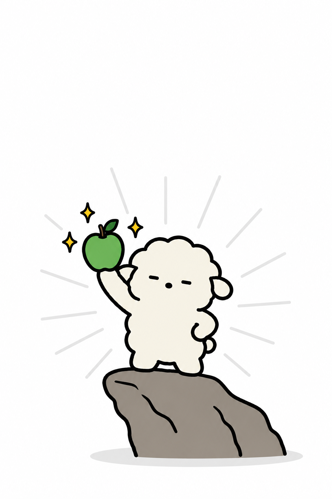
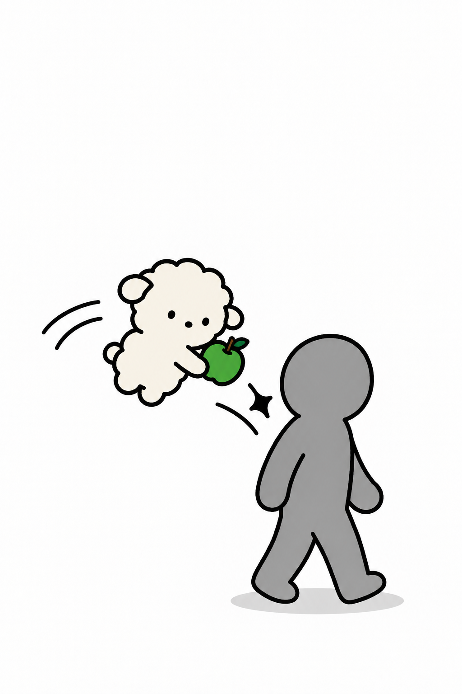
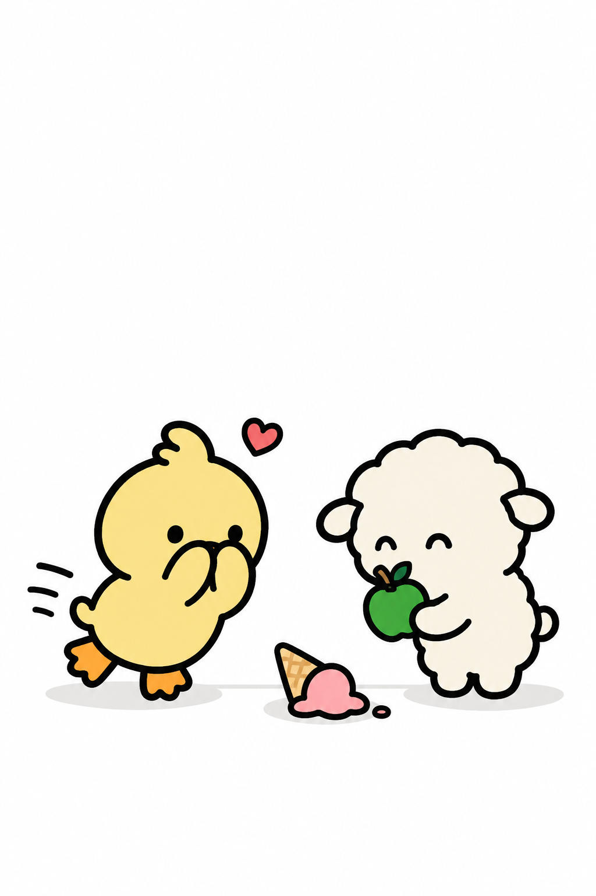
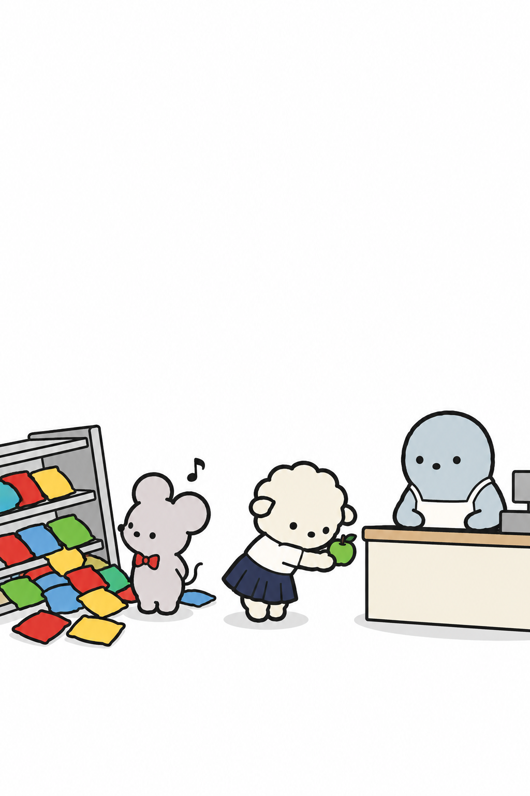
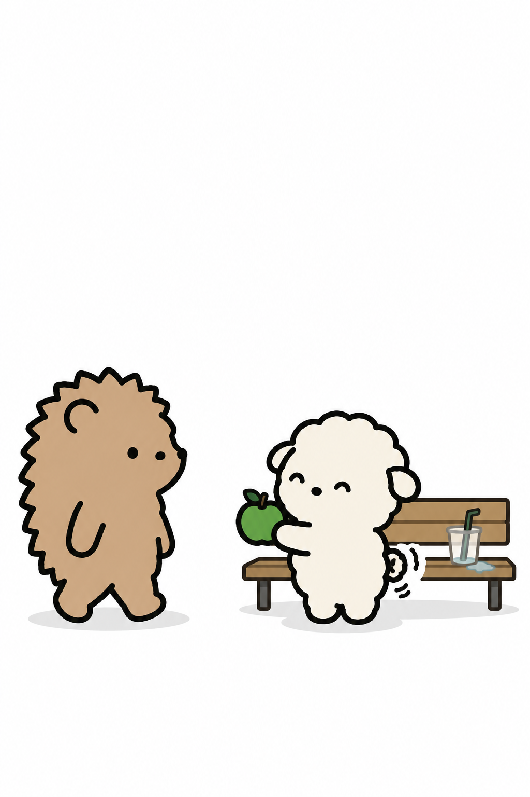
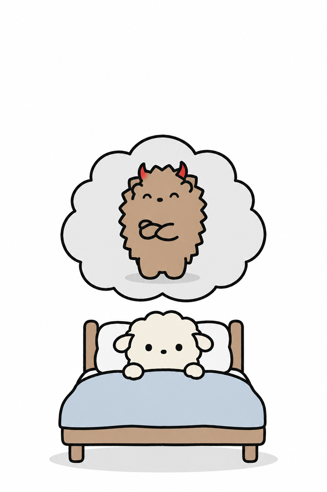
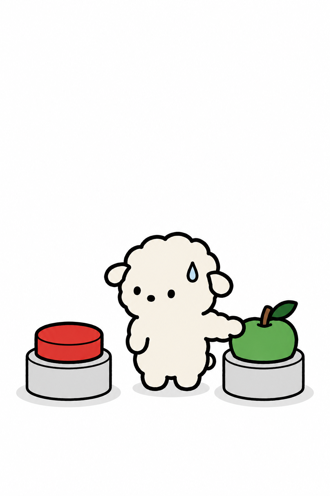
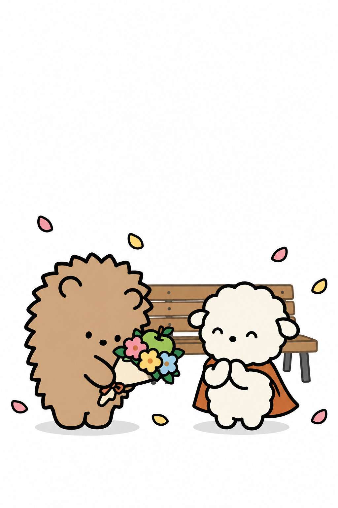

- 작은 힘에도 작은 책임은 따른다 -
잘못한 사람보다
먼저 사과할 수 있는
초능력

나는 누가 잘못을 했든
그 사람보다 먼저 사과할 수 있다.
죄송합니다!

친구가 실수를 했을 때
미안해할 틈도 주지 않을 수 있고
...내가 미안한 건데
내가 갑자기 멈춰 섰지,
미안!

어릴 때부터 동생이 사고를 치면
동생 몫까지 대신 사과해 왔다.
- 10년 전 -
누나 최고
저희가 다 치울게요!

남친이 약속에 40분 늦은 날.
이 능력은 오늘도 정확히 발동한다.
차 막혔어.
내가 괜히 일찍 나와서
불편하게 했네 ㅎㅎ

집에 돌아와 이불 속에서야
그 사과가 내 것이 아니었단 걸 깨닫고
근데 내가
왜 사과했지?

나는 싸우는 것보다
미움받는 게 더 무서운 사람이라
- 화내기 -
- 사과하기 -
미안해가
제일 쉬운 말이니까

먼저 사과하는 건 지는 게 아니라
상대가 사과할 용기를 낼 시간을 주는 거야.
- 다음 날 -
자기야,
내가 더 잘못했어
♥ 당신 옆의 초능력자를 태그해 주세요 ♥